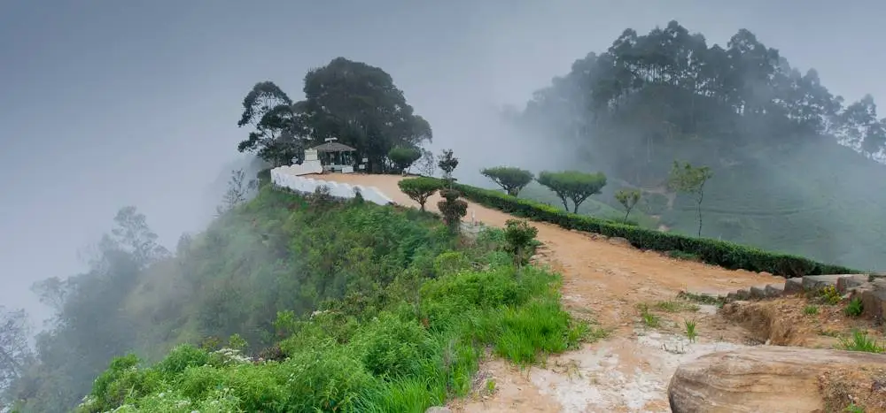
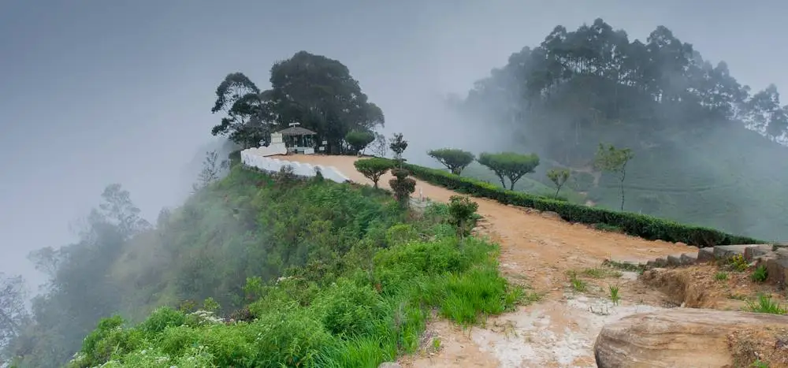

Cultural destinations in Sri Lanka
The Sri Lankan government directed the use of cultural heritages to uplift tourism with the introduction of the central cultural fund in 1980, and the cultural triangle was formed based on old and ancient places such as Anuradhapura, Polonnaruwa, and Kandy. The Cultural Triangle's world heritages can be divided into the following categories:1) Alive religious cities (Anuradhapura, Polonnaruwa)
2) Historical old cities (Polonnaruwa, Sigiriya)
3) Old cave temples ( Rangiri Dambulla)
 
